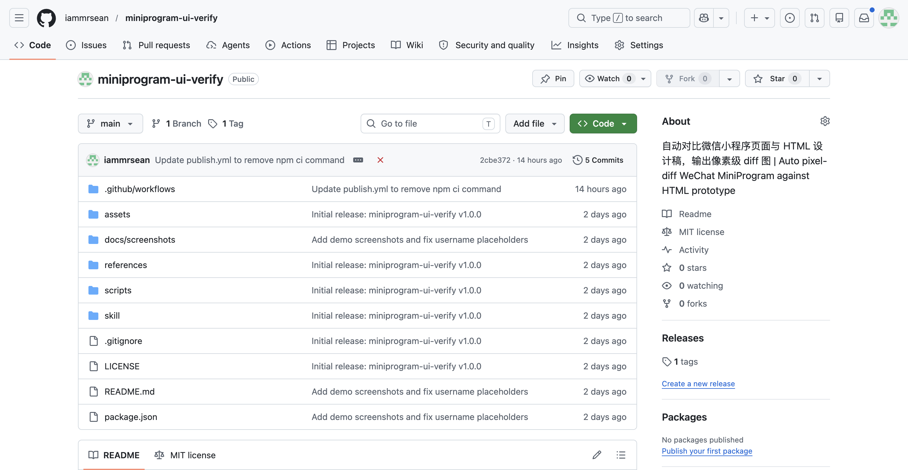
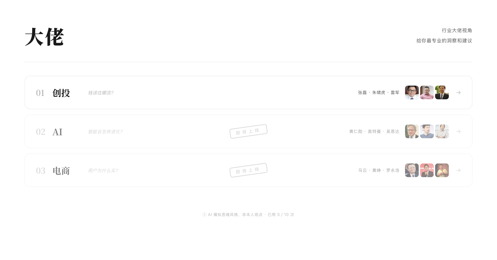
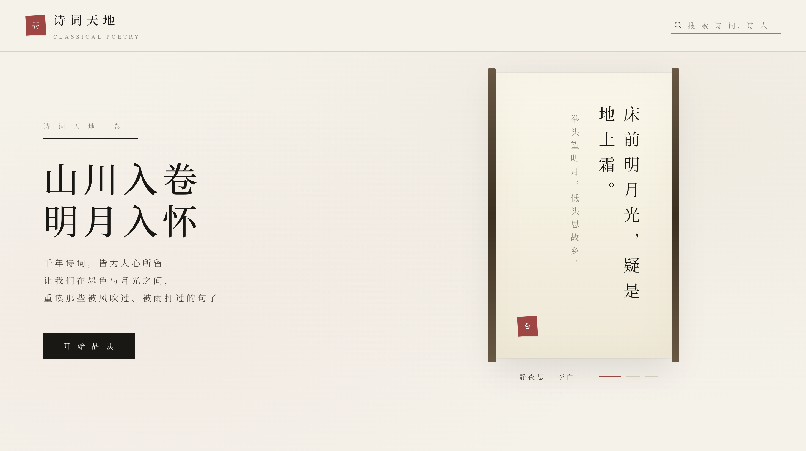
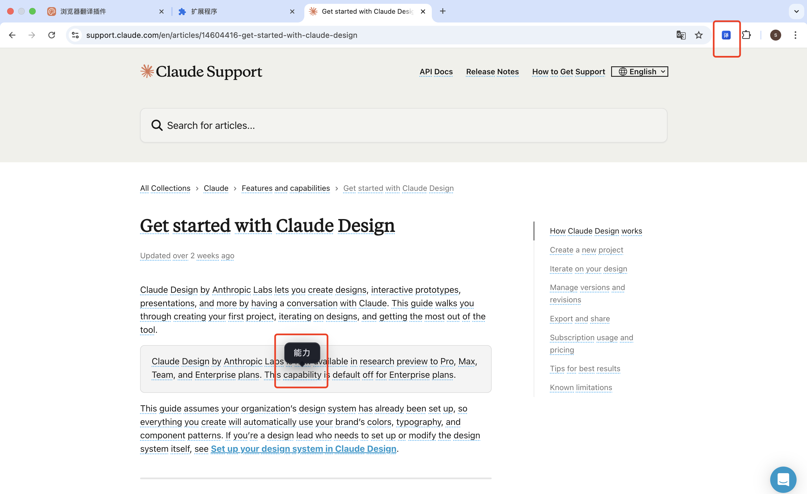

Projects
作品集
以下是我参与或主导设计的部分 AI 产品，点击可查看详细介绍。

小程序 UI 验收 Skill（开源 for Claude Code）
为 Claude Code 开发的开源 Skill，自动对比小程序页面与 HTML 设计稿，输出像素级 diff 图，告别肉眼验收。

社交日历（vibe coding项目）
以日历为载体的社交产品，解决"约谁、何时空"的社交痛点，替代反复询问"周日有空吗？几点方便？"，提前了解好友空闲时间，提升社交效率，告别尴尬。

大佬 · AI 模拟思维（vibe coding项目）
用 AI 模拟各领域大佬的思维方式，输入问题即可获得他们风格的独特解答。
🤖
智能客服（dify）
基于 Dify 搭建的企业智能客服系统，接入知识库实现精准问答，显著降低人工客服成本。
⚡
AI Agent 助手（coze）
基于 Coze 平台搭建的 AI Agent，整合多种工具与工作流，自动化处理复杂任务，大幅提升工作效率。

诗词天地（vibe coding项目）
古诗词学习与赏析平台，结合 AI 解读与动效意境展示，让传统文化触手可及。

浏览器 AI 翻译插件（vibe coding项目）
基于 LLM 的浏览器翻译插件，支持划词翻译、全文双语对照，沉浸式阅读外文内容。